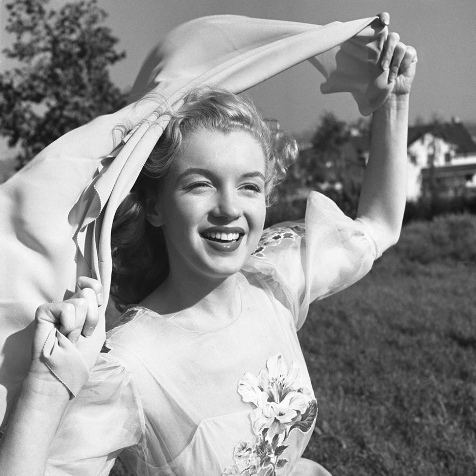
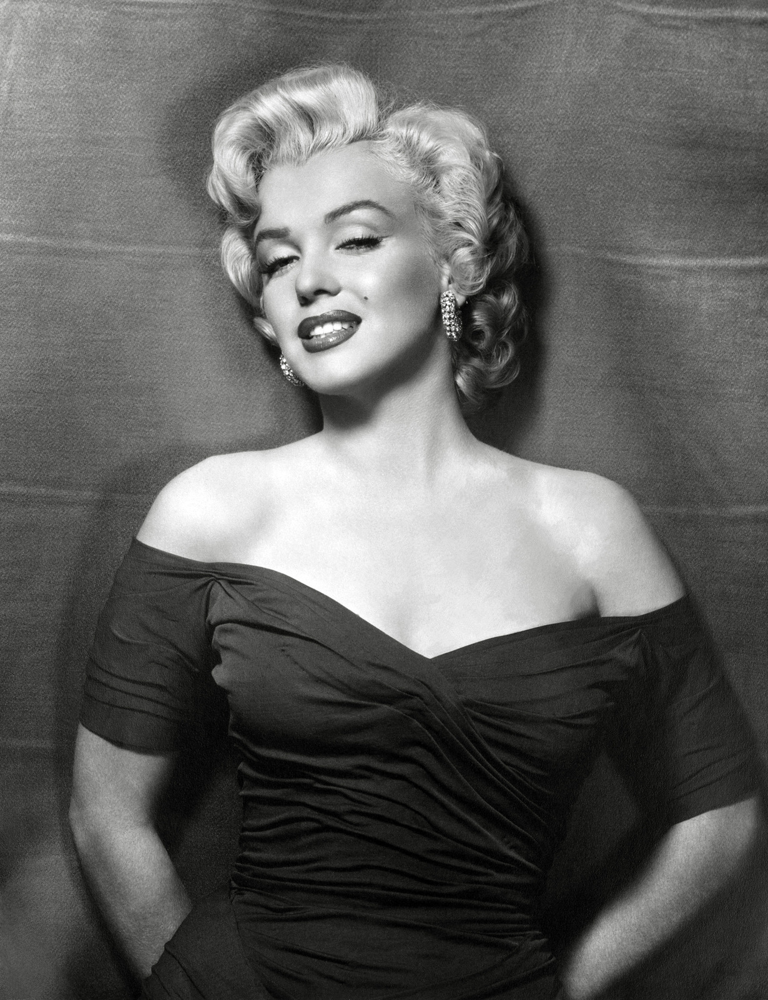
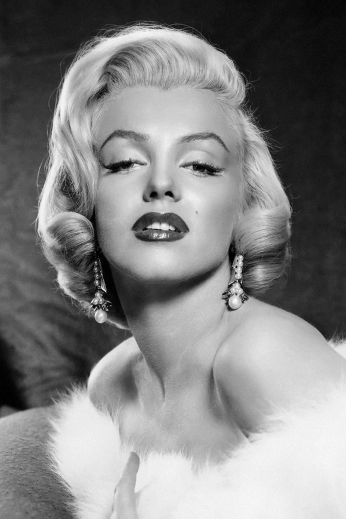

MARILYN MONROE'S JOURNEY TO AN ICONIC ACTRESS

As the country was gripped by America's involvement in World War II in 1943, Dougherty
enlisted in the Merchant Marines. A year later, he shipped out to Shanghai. As her spouse was deployed,
Monroe accepted a job at the Radio Plane Munitions Factory, where she came to the attention of photographer
David Conover, who was documenting women employed in the war effort. Yank magazine published photographs of
Monroe by Conover in 1945.
Conover showed Monroe's images to commercial photographer Potter Hueth after being
impressed by what he saw. Hueth and Monroe came to an agreement whereby Hueth would photograph Monroe but
Monroe would only get payment if her images were published in magazines. Monroe was able to model at night
and continue her day job at Radio Plane thanks to this arrangement.
Emmeline Snively, the head of Blue Book
Modeling Agency, the biggest modeling agency in Los Angeles at the time, was drawn to Hueth's pictures of Monroe.
With the condition that Monroe complete Snively's three-month modeling school program, Snively gave Monroe the
opportunity to pursue a full-time modeling career.
Monroe accepted and soon after began to work hard at honing her
new skill. Monroe's light brown hair turned blonde while she was working for Snively. When Dougherty, who was still
serving overseas, found out about his wife's new career, he was not pleased.
At this point, Monroe was being
photographed by a number of photographers for pinup magazines, which frequently featured her hourglass figure in
bikini sets. Monroe's popularity grew to the point where multiple pinup magazine covers featured her image
in the same month.

At this point, Monroe was being photographed by a number of photographers for pinup magazines,
which frequently featured her hourglass figure in bikini sets. Monroe's popularity grew to the point where
multiple pinup magazine covers featured her image in the same month.
Casting director Ben Lyon of 20th Century
Fox called Monroe for a screen test after seeing her photos in July 1946. Monroe received a six-month contract
offer from 20th Century Fox in August, with the possibility of a six-month extension.
Dougherty was getting more
and more irritated with his wife's new job after his tour of duty ended and he returned home. After things reached
a breaking point, the couple filed for divorce in 1946.
Prior to that point, Monroe had been conducting business
under her married name, Norma Jeane Dougherty. Hence Lyon suggested she use Marilyn Monroe as her screen name.

Marilyn made the decision to enroll in every class the studio provided for actors because she
knew she had a lot to prove. She was determined to learn everything, including dancing and diction. Her efforts
paid off with cameos in two incredibly forgettable films, but not enough to secure a contract extension.
When
Marilyn met 69-year-old Joe Schenck in the fall of 1947, he was a well-connected studio executive who called
Harry Cohn, the head of Columbia Studios. She signed a new six-month contract in an instant.
Marilyn was invited
to Harry Cohn's office by him after he cast her as one of the leads in Ladies of the Chorus and made advances
towards her. She was back on the streets without a studio contract after turning him down.
Due to financial
hardship and misfortune, 22-year-old Marilyn Monroe posed in her underwear for the now-famous calendar on May 27,
1949. Marilyn eventually made the decision to have plastic surgery done on her chin and nose, which helped her
because casting directors began to take notice of her more.
Marilyn received an offer of $500 per week from Fox's
Darryl Zanuck after she landed a small but memorable role in All About Eve. (Roughly $6,000 per week in current
currency.) Naturally, though, Marilyn was haunted by the nude calendar again in early 1952, so Darryl made an
effort to avoid it. The idea was to claim she wasn't the woman in the photo. They set up an interview with
reporter Alin Mosby to accomplish this. Marilyn, though, was honest. When Marilyn's explanation was revealed
in Alin's profile, she lost it. Marilyn had been able to tell her exactly why she had done it. Individuals
were fixated.
Marilyn would get about 3,500 letters a week, and although Darryl was still not sure why all the
excitement, he was aware enough to pay attention to the fans. She was cast in the lead role of Niagara right away,
and then she had a breakthrough role in Gentlemen Prefer Blondes. Her star was born at this point, though it
would eventually fall.
MONROE'S PART IN MOVIES & DRAMAS
Over the course of her acting career, Marilyn Monroe made about 30 appearances in films. Gentlemen Prefer Blondes (1953),
Niagara (1953), The Seven Year Itch (1955), Some Like It Hot (1959), and The Misfits (1961) are a few of Monroe's most
well-known motion pictures.
We have listed all some films that Monroe has appeared in, as well a documentary that was based
on her life.
Movie/dramas Monroe starred in
Documentary on Marilyn Monroe